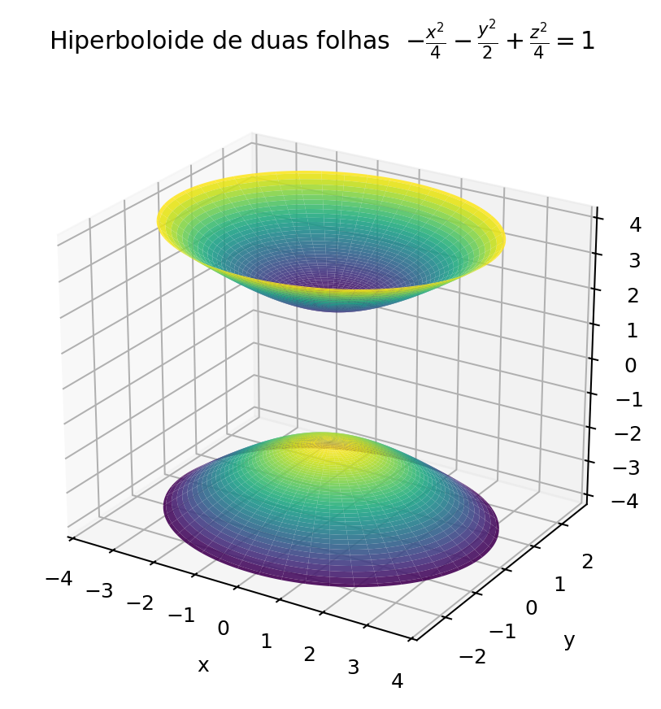
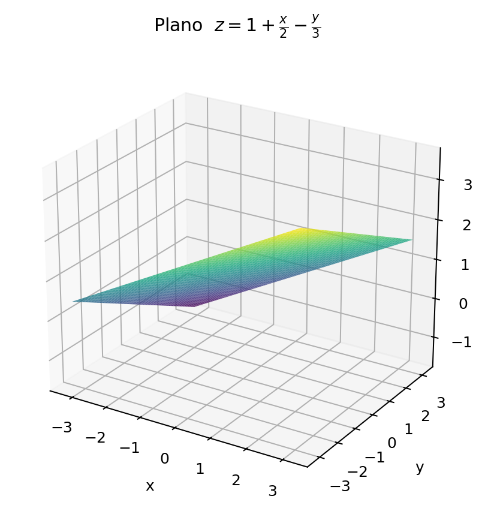

Fórmulas de derivação e integração, identidades
trigonométricas e formas canônicas das principais
superfícies utilizadas no cálculo multivariável.
1. Derivadas trigonométricas
Considere \(u=f(x)\), com
\(u'=du/dx\). Quando o argumento da função
trigonométrica depende de \(x\), o fator \(u'\)
aparece em consequência da regra da cadeia.
As superfícies a seguir aparecem frequentemente
em cálculo multivariável e na descrição das regiões
de integração. Considere \(a\), \(b\) e \(c\)
positivos.
O vértice está na origem e, nessa forma,
a superfície abre na direção positiva do eixo \(z\).
Para \(z=k>0\), as curvas de nível são elipses:
\[
\frac{x^2}{a^2}
+
\frac{y^2}{b^2}
=
k.
\]
Aumentar \(a\) produz maior abertura na direção \(x\);
aumentar \(b\) produz maior abertura na direção \(y\).
A troca de \(z\) por \(-z\) inverte a abertura.
Assim, em uma direção a parábola abre para cima
e, na direção perpendicular, abre para baixo.
Os parâmetros \(a\) e \(b\) controlam as respectivas
aberturas.
O hiperboloide de duas folhas possui duas
componentes desconectadas. O único termo
quadrático positivo determina o eixo principal.
Nesta forma, as folhas se desenvolvem ao longo
do eixo \(z\). Para \(x=y=0\),
\[
\frac{z^2}{c^2}=1.
\]
Portanto, os vértices são
\[
(0,0,c)
\qquad\text{e}\qquad
(0,0,-c).
\]

Hiperboloide de duas folhas orientado
ao longo do eixo \(z\).
12.8 Plano
\[
\boxed{
Ax+By+Cz=D
}
\]
Um vetor normal ao plano é
\[
\mathbf n
=
\langle A,B,C\rangle.
\]
Se \(C\neq0\), podemos isolar \(z\):
\[
z
=
\frac{D}{C}
-
\frac{A}{C}x
-
\frac{B}{C}y.
\]
Os coeficientes \(A\), \(B\) e \(C\)
determinam a orientação do plano.
Se apenas \(D\) for alterado, o plano é
deslocado paralelamente, mantendo a mesma orientação.

Exemplo:
\(z=1+x/2-y/3\).
13. Reconhecimento das superfícies pela equação
Elipsoide:
três termos quadráticos com o mesmo sinal,
com a expressão normalizada igual a \(1\).
Hiperboloide de uma folha:
dois termos quadráticos positivos e um negativo,
com lado direito igual a \(1\).
Hiperboloide de duas folhas:
um termo quadrático positivo e dois negativos,
com lado direito igual a \(1\).
Cone:
equação quadrática homogênea com termos
quadráticos de sinais opostos.
Paraboloide:
uma variável aparece em primeiro grau e
as demais aparecem quadraticamente.
Cilindro:
uma das variáveis não aparece na equação.
14. Translações
As formas anteriores estão centradas ou possuem
vértice na origem. A presença de expressões como
representa um elipsoide com centro em
\((h,k,\ell)\).
Visualização no GeoGebra 3D
Insira as equações das superfícies e altere
os parâmetros \(a\), \(b\), \(c\), \(h\),
\(k\) e \(\ell\) para observar mudanças
de escala, abertura, orientação e posição.
Referência:
fórmulas de derivação, integração e identidades
trigonométricas organizadas a partir de Stewart,
Cálculo, Vol. 1. As superfícies foram
incluídas como formulário geométrico complementar
para o estudo de cálculo multivariável.